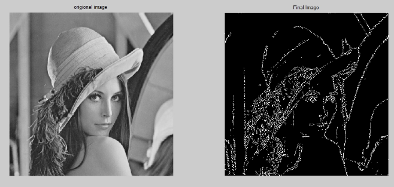
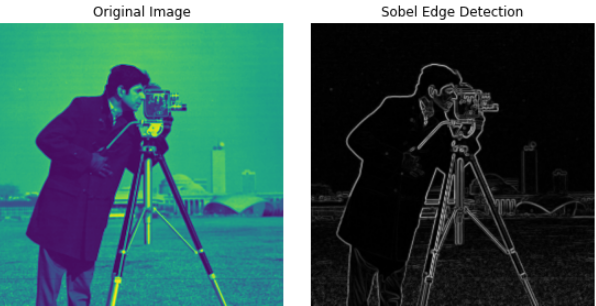
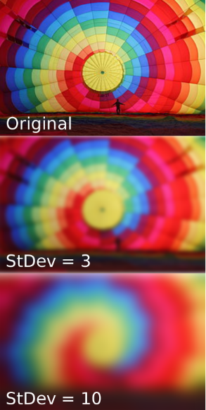

Compared to today’s approaches, traditional computer vision techniques were relatively innacurate in comparison to modern day techniques in classifying images. However, they often required less computational power compared to CNN's.[3]
First, let's note down how computers take in images. Each image is composed of pixels - each of which has an intensity (the average of the RGB (red, green and blue) values). A grid of these pixels combine to create an image.
Edge Detection:
Using the intensity of the pixels, we can use algorithms to detect where there are drastic changes in the pixel intensities. Using a simple for loop, we can detect when an intensity has changed over a specific value that we specify. By joining together the areas where the pixel intensities drastically change, we can detect edges. [4]
Examples of Edge Detection algorithms:
Canny Edge detection:

Sobel Edge detection:

Sometimes, images that we receive have rapid changes in pixel intensities that are not a part of the image itself. To get rid of these outliers, we can use blurring to remove these extreme outliers and get a better image to work with. Often, with higher blur, we see less edges in the image we are processing. [9]
Gaussian Blur:

*the higher the StDev, the higher the blur is for the image
There were many problems with traditional computer vision. Often, the partial obstruction, change in orientation, or even size caused failure within the algorithm. To solve this, we use Machine Learning and AI.